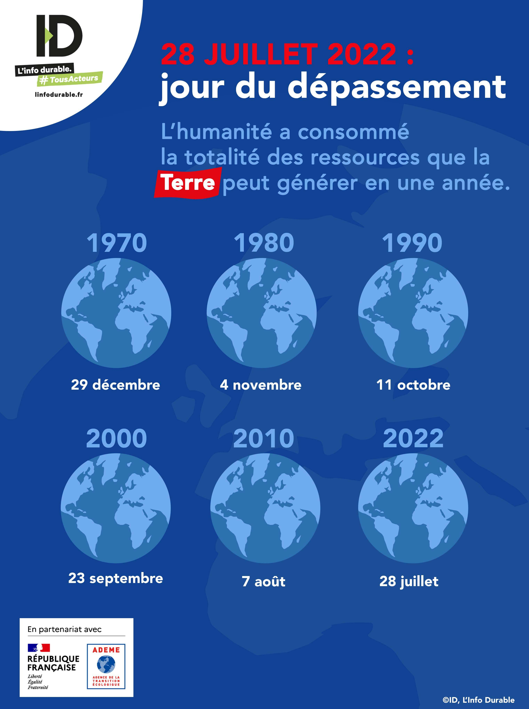
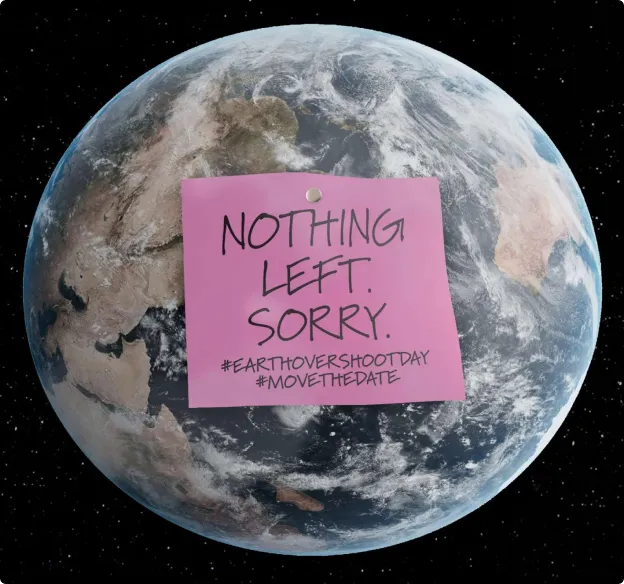

A concern
Earth’s resources :Why is it a concern ?
How I became aware ?
When I was younger, we did not talk a lot about global warming. When I was in first grade, we talked about the hole in the ozone layer. In middle school, we talked about global warming. And in high school we talked about the consequences. Now it’s everywhere on social media.
A lot of natural disasters are happening because of human activities. Intense heat waves in the summer, wildfires, floods, droughts, storms, …
And the Earth’s overshoot day is earlier every year!
What is Earth Overshoot Day ?
The Earth’s Overshoot Days occurs when we have consumed all of the resources the Earth can produce in a year. A few years ago, this did not happen until December.
Now in July humans have consumed all that the earth can produce in a year. This is a fear for the future because the number of people on Earth is increasing dramatically.
And as resources are consumed faster and faster, there will be shortages. Less water, less vegetation, less crops, less livestock, will create future problems with food supply.
Feeding the entire world's population in developed and developing countries will be a challenge. Many people currently do not have access to water, food or electricity. If there is a lack of resources, more countries will be affected in the future.
Some research labs have started to tackle the problem by trying to change our diet, like producing reconstituted meat.
What kind of consequences ?
But the consequences of global warming also have an impact on crops. This year, a severe drought affected Canada. As a result, there was a global shortage of mustard. This is just one example of many that could happen.
The advantage of the media coverage of global warming is that young people are more mobilized to change things. And to ensure that we can pass on a "healthy" planet to our children. But that's another story.